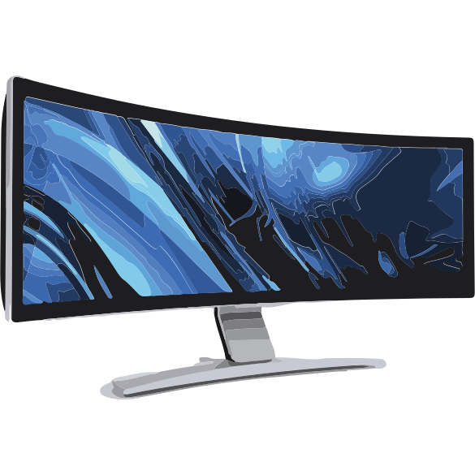
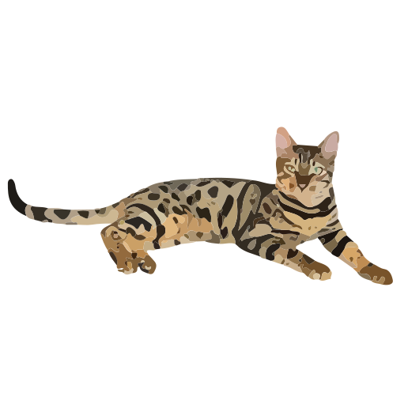

Designing for augmented reality is both exciting and terrifying
Begin
The most obvious place to look is at movies. There are a million examples, but the most commonly thought-of ones are Iron Man and Minority Report.
These movies introduce some great concepts,
and also things that look great on screen but would be terrible in real life.
When designing AR user experiences, it is inportant to keep in mind three
Rule 1: All objects should be anchored
Rule 2: Object should never appear without the user’s permission
Rule 3: Arm gestures are not a suitable navigation method
Keep these rules in mind, we'll come back to them in a bit
Objects in an AR environment are analogous to objects in the real world.

A Display
A Globe

A Cat
A User interacts with virtual objects just like she would real world objects. Let's take a globe. A user could walk up to the globe and spin it around. She also could do things with this virtual globe that aren't possible with a real globe. She could zoom into a country, pin her favorite locations, or visualize live seismic activity
This brings us to our first rule: All objects should be anchored. Anchoring an object means that it stays attached to a place in the real world. Although it may often be tempting to float objects in front of your face, doing so breaks the illusion that objects are objects. If you need to look more closely at an object, either walk to the object or move its anchor location to a surface nearby.
Next
Previous
Chapter 3:
UX Design
Examples